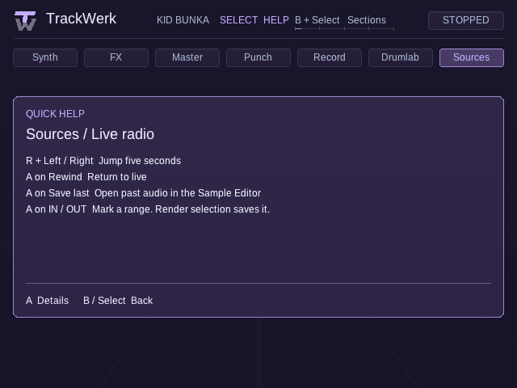
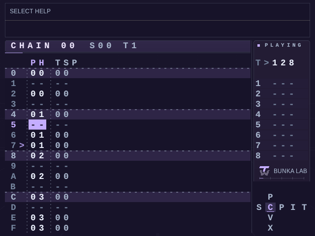

PocketTracker’s established workflow
The tracker, sampler, sample editor, mixer, export tools and handheld button workflow come from the upstream project. TrackWerk keeps that musical foundation and credits its original developers.
Kid Bunka / Handheld audio lab
A fragment from an archive. A drum from your collection. A sound you have never heard before. Turn it into a track with TrackWerk.
An independent fork of PocketTracker by conanizer and contributors.

ORIGIN / OPEN SOURCE
TrackWerk is an independent GPL-3.0-or-later fork of PocketTracker by conanizer and contributors. Their work is the foundation of this project, and its authorship remains visible.
The tracker, sampler, sample editor, mixer, export tools and handheld button workflow come from the upstream project. TrackWerk keeps that musical foundation and credits its original developers.
This fork develops the expanded Studio, synthesis presets, performance banks, archive-to-sample workflow, Drumlab, visual identity, typefaces and handheld fixes described here. TrackWerk is maintained separately, with its own name, artwork and public Android identity.
Selected synthesis and effect algorithms are adapted from Mutable Instruments’ open DSP by Emilie Gillet and other contributors. Those component credits are separate from PocketTracker’s authorship. Read the complete credits and licenses ↗
WHAT’S NEW IN 1.0
Explore live radio, hear the last minute again and carry the piece you want into the sample editor. In the sequencer, choose how much visual structure you see while you write.

Browse by genre, replay recent audio and save a WAV from your listening point. SELECT opens help while the stream keeps playing.
Open the radio guide ↗
Set Chain and Phrase to Off, Beats, Grid or Dots independently. The selection and playhead stay visible as you change the guides.
Set up the sequencer ↗Design a voice, generate a rhythm, perform Punch effects and bring the result back into the arrangement as a sample.
Explore the Studio ↗01 / From a sample to a song
Follow a sample from the browser into the editor, place the cuts and build a track around their rhythm.
LOAD / LOCAL SAMPLES
Open a sample in the instrument browser. Start with a few bars that have a shape you can build around.
Actual native app capture, rendered on a desktop.
Explore archive sampling and radio rewind on connected devices. Keep source details with audio you plan to share.
02 / THE TRACKWERK 1.0 SESSION
Hear a 1924 piano phrase turn into boom-bap, followed by broken UK garage and house. Watch the sampler, Drumlab and Studio, and compare three held Punch effects against the dry mix.
03 / The Studio
Keep the tracker at the center. Open a dedicated Studio when you want to design a voice, shape the mix or play an effect into the moment.
SYNTHESIS / PLAY IT WHILE YOU SHAPE IT
Explore Plaits, Braids, Rings, Elements, Clouds-derived granular models and additional Studio DSP voices. Engine-specific parameters keep the character of each family in view.
Choose from 2,048 categorized synth presets, including drums. Audition a sustained note, or edit a loaded synth while its sequence plays.
SAMPLES / SMALL DETAILS MATTER
Preview and seek through a long WAV from storage. Mark a region, save a new excerpt and open it for detailed slicing. The source stays intact.
Fine zoom, manual and transient slices, fades, normalization, declicking and undo help turn the cut into an instrument.
Work with a long recordingFull-source preview is separate from the RAM needed to edit an excerpt.
PERFORMANCE / HOLD THE MOMENT
Eight banks of eight momentary punch effects. Select a pad and hold A. Release to bring the mix back. Rhythm, Tape, Filter, Dub/Space, Cut/Glitch, Granular, Modulation and Damage.
Use the direct shortcut, perform a few gestures and capture your own output with internal resampling.
Learn the performance controlsMomentary effects are released on exit, stop or lost controller focus.
Assign 5–8 sounds. Set a style, density, variation, humanize, swing and fill. Generate a pattern, listen, then edit the resulting tracker phrases.
Rhythm, with a route back to the notes ↗64 reverbs, 64 delays, 96 Studio FX and 32 mastering presets. Categorized starting points for rooms, tape echoes, resonators, granular textures and controlled color.
Build a useful effect chain ↗Drive, dynamics, stereo width, high-pass filtering, output gain and peak ceiling. Refine the balance and render a mix or stems for the next stage.
Finish with intention ↗04 / Your screen, your pace
Choose one of 17 typefaces, 50 color palettes and 18 surface materials. Readable studio faces sit alongside broken raster lettering, terminal styles and demoscene textures.
The established button workflow remains. Your selected appearance, control mappings and existing project paths stay in place when using the matching update.
Find your setup05 / Get TrackWerk
Choose your platform and follow its installation guide.
TrackWerk 1.0 is available. Read the 1.0 release notes ↗
Android 8 or newer. ARM64, ARMv7 and x86_64 in one APK. Controller behavior and audio input still depend on the device.
Download Android APK ↗First install & safe updates ↗The public TrackWerk APK has its own Android identity and installs alongside the earlier app. Keep the old app installed, export any app-private projects and media to a shared folder, then grant TrackWerk access to that folder. Settings and control bindings need their own setup. Updates for the public TrackWerk package use the same application ID and signing key.
Read the Android migration steps ↗A native Linux build using the established standalone launcher. Your sample library stays in its existing data folder.
Download first-install pack ↗Download program update ↗KNULLI, samples & first start ↗Mini uses local audio. Mini Plus adds supported Internet sources over Wi-Fi. The new long-WAV preview keeps full-file decoding out of the preview path.
Download Mini Plus pack ↗Download Mini offline pack ↗Download Miyoo program update ↗Choose the right Miyoo build ↗Separate ARM64 port with controller mapping for AmberELEC. The RGB20S needs a compatible external Wi-Fi adapter for online sources.
Download RGB20S AmberELEC port ↗Download RGB20S program update ↗System and Ports setup ↗Use the supplied program updater on Linux handhelds. Existing TrackWerk Android installs use matching signed updates; migration from an earlier app identity is a separate step. Keep Samples, Projects and Presets in place, and retain the old app until its internal data is exported. Existing Linux data folders remain for compatibility. Read the update route before copying files.
06 / COMPATIBILITY
The release has automated engine, update and emulator checks. Earlier builds were used on physical handhelds. Check the device notes for coverage of Wi-Fi, controls and audio input.
See the full compatibility table ↗INDEPENDENT / OPEN SOURCE
TrackWerk is an independent Kid Bunka fork of PocketTracker. Original authors and contributors retain their credits. The application is GPL-3.0-or-later; component licenses and matching source accompany the release.